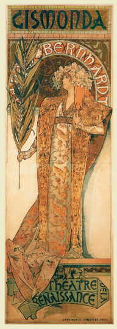
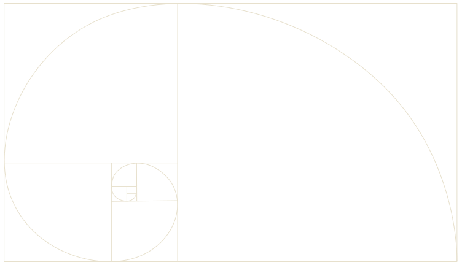
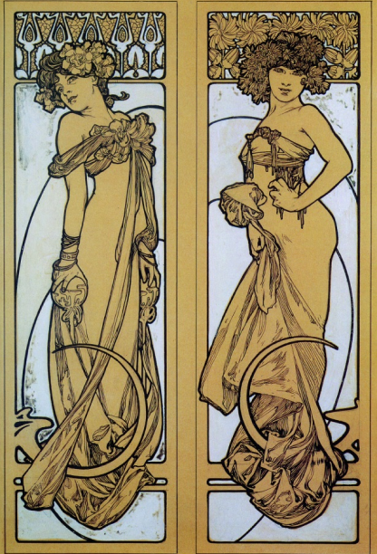
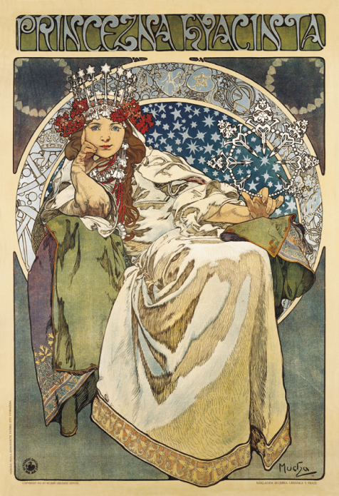
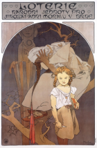
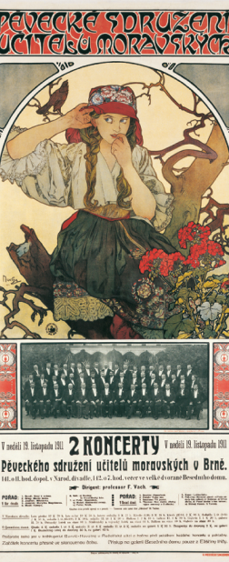

The museum is divided into
seven sections exhibiting:
Decorative Panels; The Parisian Posters; Documents Décoratifs;
The Czech Posters; Oil Paintings; Drawings and Pastels,
Photographs and personal memorabilia of the artist.
The exhibition is completed by an interesting documentary on the life and
work on Alphonse Mucha.
A number of items, previously part of the Mucha family home in Prague,
are now on exhibit.
SECTION 2. PARISIAN POSTERS

Gismonda
Posters made in Paris in the 1890s form the best-known and world famous segment of Mucha’s work. It was through them
that he managed to promote his own version of the new decorative style. The primary group consists of posters for Sarah
Bernhardt, who was a famous Parisian actress.
Gismonda, proof print
The two original proof prints for Gismonda are quite interesting. Mucha’s poster was too long for the common size of the
printer’s stone and so it was assumed that it had been printed on two stones. Proof print however proves that it was
printed using a single stone.

SECTION 3. DOCUMENTS DÉCORATIFS
In 1902, Mucha published a collection of 72 plates with patterns, drawn in pencil and brightened with white paint, for
stylistic work in arts and crafts, titled Documents Décoratifs. This portfolio includes various ornamental and
naturalistic floral motifs, studies of women’s heads, and nudes, combining illusive naturalism with abstract ornamental
framing. Jewellery, furniture, tableware and many other items related to domestic life at the time suggest that Mucha
strove for a summary of his extensive experience in decoration, which, especially considering his work for the Paris
World’s Fair of 1900 and the interior design for the Fouquet Jewellery Shop, left a two-dimensional plane expanding into
three-dimensional space.


SECTION 4. CZECH POSTERS
After his permanent relocation back to his homeland in 1910, Alphonse Mucha returned to his long-held desire to
systematically and single-mindedly, through his art, address his fellow people and express their needs and ideals.
Gradually a new set of posters emerged, quite distinct in design from the Parisian ones.
There were two prevalent themes: a new approach to folklore, emphasizing the colourful beauty of Moravian costumes and
the gentle type of young Slav women (Moravian Teachers’ Choir, 1911), and the theme of the sports events and festivals
of the Sokol organization, which had been a symbol of Czech national self-determination since the 19th century.
Princess Hyacinth

Lottery

Moravian Teacher's Choir

In addition to these, there are also posters that strongly denounce the oppression of the Slavs (Lottery of the Union of
Southwestern Moravia, 1912) and lyrical recollections of Parisian motifs (Princess Hyacinth, 1911). In these works,
ornaments are subordinated to the melody of the line.